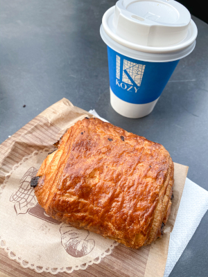

Weekend in Paris: What to See and Where to Eat
Where to Eat
Kozy Café
Brunch, Snack
I had Kozy Café on my list of places to brunch during my weekend in Paris, but I unfortunately only made it there for a double espresso and a chocolate croissant. It was hands down the best croissant I’ve ever had, and I am sure all of their food is amazing! They have a large social media presence and numerous locations which is why I was drawn to it. I will definitely be back next time I am (hopefully) in Paris!
Lauderée
Snack, Dessert
I had previously never tried a macaroon before and had always seen Lauderée on social media as a must-see when in Paris. Let me tell you, the hype was REAL! The macaroons were delicious and you truly cannot go wrong with whatever flavor you choose! I visited the Lauderée at Versailles so the atmosphere was completely stunning and the perfect place to try for the first time.

Sunday in Soho
Breakfast, Brunch, Lunch
I am not exaggerating when I say that my meal at Sunday in Soho was the best brunch I had in Europe. I did not get here until 2pm and there was still a line out of the door. I strongly recommend making a reservation in advance if you are looking to stop here. I did not as I was not entirely sure what my schedule was going to be like the weekend I visited. Our check was brought out to us in a book about finding join in every moment which I thought was sweet and unique. I ordered the pancakes and split a small banana bread side dish with my friend.
Saint Pearl
Breakfast, Brunch, Lunch
After walking around the Notre Dame area and before we visited the Lourve stopped by Saint Pearl. It is a quaint little spot with a small menu and limited seating, but our food was so delicious! My friend and I both got the French toast – I ordered mine with berries and compote and she had hers with peanut butter. Both were great and I wouldn’t have wanted to start my day any other way.

5 Pailles
Breakfast, Brunch, Lunch
This café is home to the iconic chocolate chip cookie that I saw on every Paris food Instagram, and I knew I just had to try it during my weekend in Paris. 5 Pailles did not disappoint! It was everything that I wanted in a chocolate chip cookie and more. It’s also in a cool area I had not explored yet. I would definitely recommend stopping by for a sweet treat!
Pink Mamma
Dinner
After visiting the Sacre Couer, my friend and I were tired and hungry after our journey. I had Pink Mamma saved in my Google Maps for that area as I had seen it on Paris food Instagram’s. At the time I had no idea what to expect, but I knew it was a popular spot. My friend and I grabbed a drink beforehand since they didn’t open for dinner for a bit, and something told me that we ought to get their ~45 minutes before they opened as they did not take reservations. There was already a line when we got there, and by the time they opened the line had wrapped around the block! It turns out that Pink Mamma is a part of the Big Mamma Group which has locations in London, Paris, Lille, Lyon and Madrid. Anyway, let’s talk about the food.
My arguably life-changing meal started with burrata topped with black truffle and a delightful cocktail. I had a pizza with all of my favorite things on it (olives, artichokes + potatoes) with the crust cooked to perfection and finished the dinner with an ice cream sundae. I was so moved by my amazing meal that I ate at their London location Gloria multiple times once I got back from my weekend in Paris. I had plans to go to their other London location Circolo Populare but had to return back to USA due to COVID-19. I was devastated because Circolo Popolare in particular was very hard to get a reservation for! If you are in Paris or London, the Big Mamma Group restaurants are ESSENTIAL to eat at!
Paillettes
Lunch, Dinner
My friend and I visited Paris during Valentine’s Day weekend. The holiday landed on a Friday, so I knew I needed to make a reservation in advance. Every other place besides Paillettes had a set menu at a ridiculous price. I found this restaurant on a reservation-making site and I am so glad I did! Paillettes is relatively new to Paris and it was not too busy when we visited, but it was amazing! I anticipate that once it is around longer it will be a hit! We ordered truffle arancini as an appetizer, and I had the scallop risotto for dinner. For dessert we ate lava cake with ice cream. I have no complains about anything! The atmosphere was on-trend and they feature live music on certain nights, I would definitely recommend stopping at this under the radar spot during your time in Paris.
What to See
Lourve Museum
The Lourve was absolutely breathtaking. It is home to many famous pieces of art, including the Mona Lisa, Venus de Milo and The Winged Victory of Samothrace to name a few. I loved walking through the museum and reading about all of the history in each time period. I will admit I am not super into museums, but I do appreciate beautiful things which is why I loved my time here so much. The Lourve is HUGE so it took a while to get through and the room featuring the Mona Lisa was extremely crowded and claustrophobic. I did not wait in line to view her as it was very hectic but I did take a peak from a distance! Although I’m sure anyone visiting Paris doesn’t need any convincing, I must reiterate that Lourve is a must-see during any visit to Paris.
Arc de Triomphe
My friend and I booked Skip-the-Line Arc de Triomphe Rooftop Tickets on getyourguide.com prior to our arrival in Paris. We went up what felt like a million stairs to reach the rooftop so if you are planning on making it to the roof, wear comfortable shoes! The hike to the top was well worth it – from the top you can see a panoramic view of Paris. Besides the gorgeous views, there is also a lot of history behind the monument. If you want to learn more about it, the Britannica has a wonderful summary. I am very happy we chose to not only visit the Arc de Triomphe, but walk to the top and I definitely recommend stopping during your weekend in Paris!
The Palace of Versailles
The Palace of Versailles was so stunning that I still look back at the pictures I took that day in awe. My friend and I took a tour of the Palace and learned SO much about the history behind it. The Palace was the most extravagant place I have ever been, and I am so happy we took a guided tour so that we could learn the history while exploring Versailles’ beauty. If you would like to learn more about Versailles, their website gives an amazing description! Unfortunately we visited in February so the gardens were closed, but it was still delightful to walk around and imagine how it would look in the warmer months. Versailles is obviously an iconic and well-known part of France’s history so you cannot miss it during your visit!
Where to Stay
My friend and I stayed at Hôtel Yooma Urban Lodge during our weekend in Paris. The hotel is located 1km from the Eiffel Tower and blocks away from a multiple subway and train stations which was very convenient. Our room was clean and featured 2 twin beds and a spacious bathroom. It was perfect for our price range and was exactly what we needed as we didn’t spend much time in the room. If you are a student abroad and want to spend the weekend in Paris, Hôtel Yooma is definitely for you!
Let me know about your Paris favorites in the comments below! And as always, feel free to reach out to me with any questions.